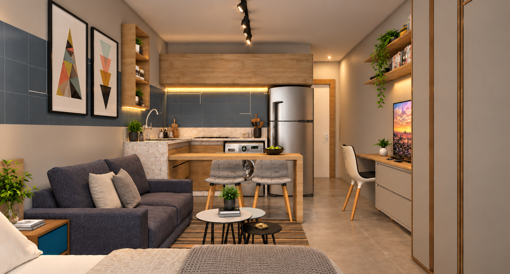
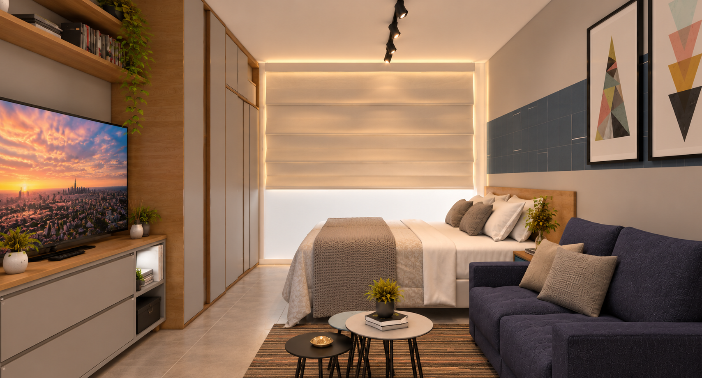
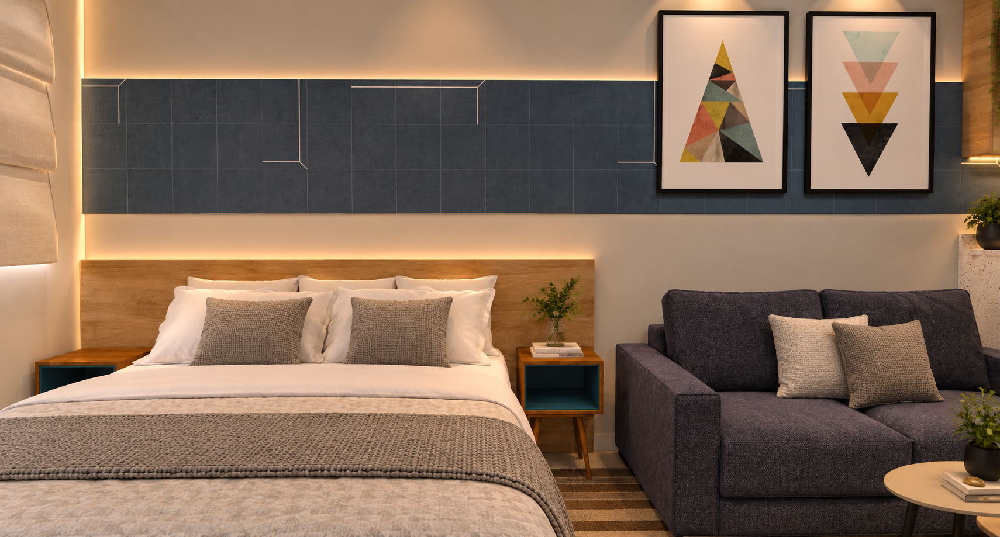
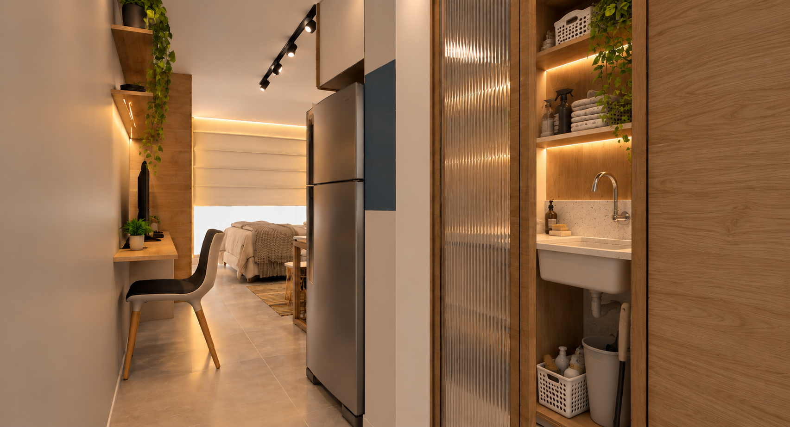
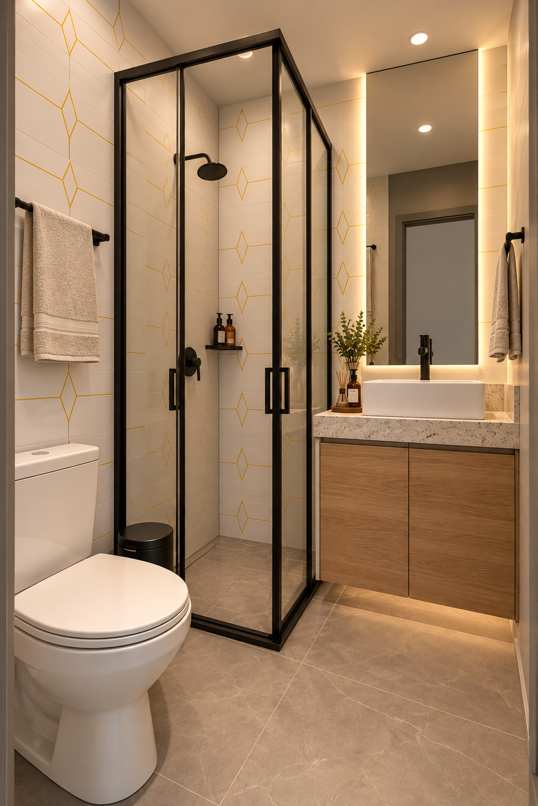

Interiores
Projeto de interiores desenvolvido para otimizar um espaço compacto, integrando dormitório, estar, cozinha e área de trabalho em uma composição funcional e acolhedora. A madeira, os tons neutros e os detalhes em azul estruturam a identidade do ambiente, enquanto a iluminação indireta valoriza os diferentes usos do espaço.




